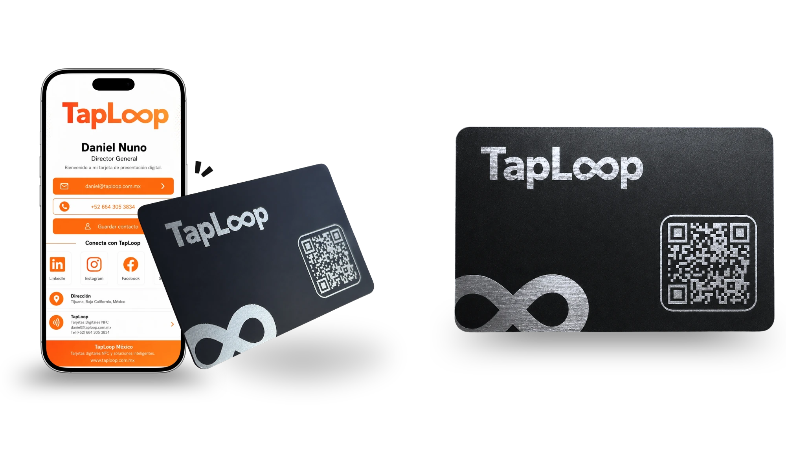
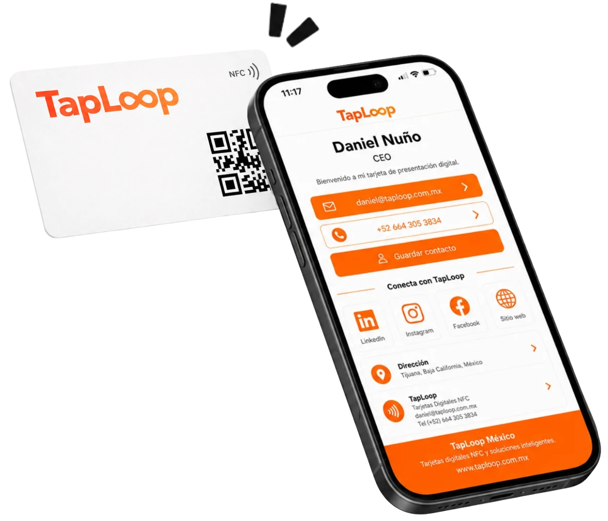
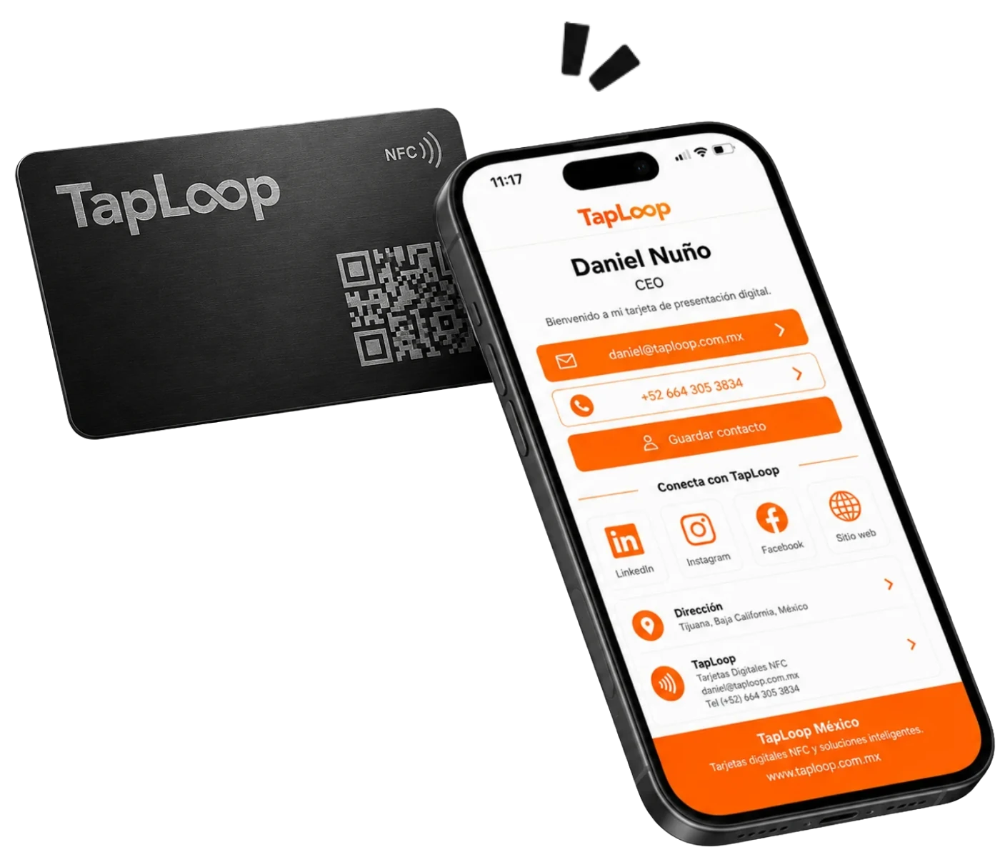
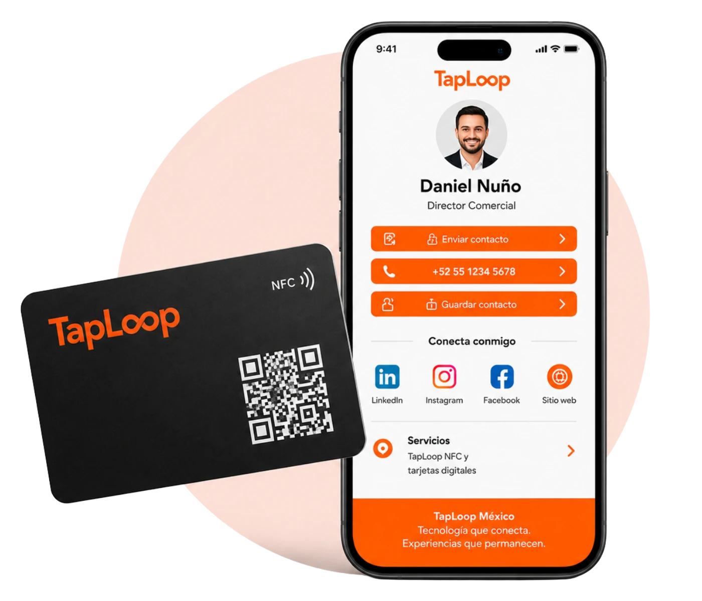
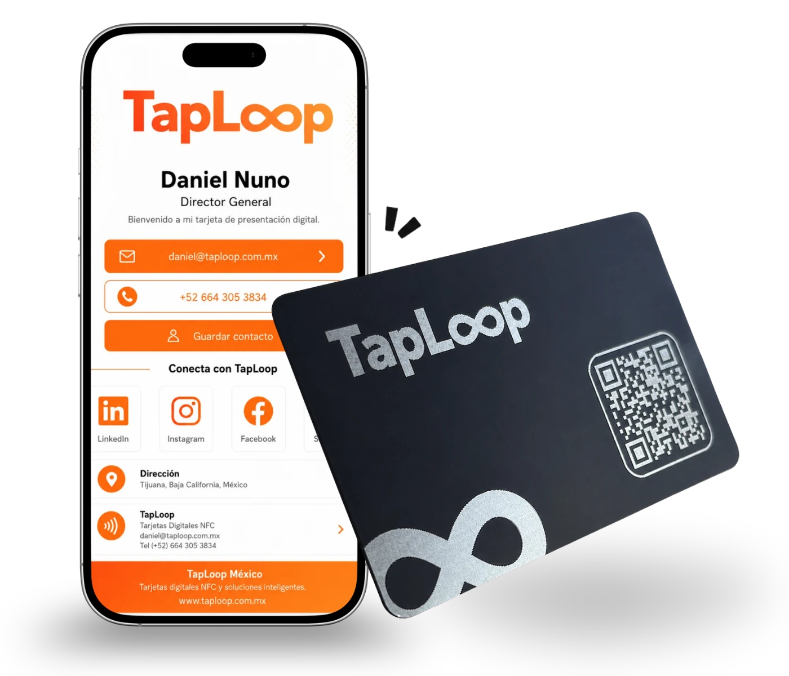

Tarjeta NFC Digital PVC
Una tarjeta de presentación digital práctica y personalizable para compartir contacto, WhatsApp, redes, ubicación y enlaces con un toque o mediante código QR.
Tarjetas NFC personalizadas en México
Ambas se personalizan con tu marca y abren un perfil digital con contacto, WhatsApp, redes sociales, sitio web y código QR.
Una tarjeta de presentación digital práctica y personalizable para compartir contacto, WhatsApp, redes, ubicación y enlaces con un toque o mediante código QR.

Una tarjeta de presentación NFC premium para directivos, socios y profesionales que buscan una imagen más exclusiva y una experiencia de alto impacto.
Tarjeta de presentación digital NFC
Una tarjeta NFC es una tarjeta física inteligente que abre tu perfil digital cuando otra persona acerca su teléfono o escanea el código QR. No requiere instalar aplicaciones y puede utilizarse todas las veces que necesites.
El receptor acerca su teléfono compatible al chip NFC integrado en la tarjeta.
El navegador muestra tu perfil digital NFC con datos de contacto, WhatsApp, redes y enlaces.
La persona puede guardar tu contacto, llamarte, escribirte o visitar tus enlaces al instante.
Elige tu tarjeta NFC
Las dos opciones incluyen personalización de marca, perfil digital, chip NFC programado y código QR. Elige el formato que mejor represente tu actividad, puesto o equipo.
Una tarjeta ligera, resistente y personalizable para compartir tu perfil digital, contacto, WhatsApp, redes sociales, catálogo, ubicación y enlaces comerciales en segundos.

Una tarjeta metálica elegante y de alto impacto para directivos, socios, marcas personales y profesionales que desean proyectar una imagen premium en cada encuentro.

Comparativa de tarjetas NFC
La elección depende de la imagen que deseas proyectar, la cantidad de integrantes y el contexto donde compartirás tu perfil digital.
Práctica, versátil y eficiente para profesionales, ventas, atención a clientes, eventos, agencias y equipos comerciales.
Más exclusiva y robusta, ideal para directivos, socios, ejecutivos, marcas premium y contactos de alto valor.
Ambas abren un perfil digital con contacto, WhatsApp, redes, sitio web, ubicación, documentos y catálogo.
Qué incluye una tarjeta NFC TapLoop
Nos encargamos del diseño, la programación y las pruebas para que recibas tu tarjeta de presentación digital NFC configurada y lista para usar.
Adaptamos la tarjeta y el perfil digital a tu logo, colores, identidad visual y datos.
Concentra nombre, puesto, teléfono, WhatsApp, correo, redes sociales, sitio web y enlaces.
La tarjeta se entrega configurada para abrir tu perfil digital al acercarla a un teléfono compatible.
El código QR abre el mismo perfil digital y funciona como alternativa universal de acceso.
Verificamos el funcionamiento del NFC, QR, botones y enlaces antes de la entrega.
Te apoyamos desde la propuesta de diseño hasta la producción y entrega final.

Tarjetas NFC para empresas
Creamos una línea visual corporativa y personalizamos cada tarjeta y perfil digital con los datos de cada colaborador.
Cada integrante comparte su nombre, puesto, teléfono, WhatsApp, correo y enlaces.
Todas las tarjetas mantienen el diseño, colores y estilo de la empresa.
Programamos y probamos cada tarjeta antes de enviarla a tu equipo.

Dudas sobre tarjetas NFC
Resolvemos las dudas más comunes antes de elegir tu tarjeta NFC PVC, metálica o solución para equipos.
Es una tarjeta física con tecnología NFC y código QR que abre un perfil digital personalizado con tus datos de contacto, WhatsApp, redes sociales, sitio web, ubicación y enlaces importantes.
La tarjeta PVC es ligera, versátil y adecuada para uso diario, eventos o equipos. La metálica ofrece una presentación más premium y está pensada para directivos, socios y contactos de alto valor.
No. El perfil digital se abre directamente en el navegador del teléfono al acercar la tarjeta o escanear el código QR.
Sí. Dependiendo de la solución contratada, puedes actualizar datos, enlaces, teléfono, puesto o fotografía sin reemplazar la tarjeta física.
Sí. Diseñamos una línea visual corporativa y personalizamos cada tarjeta y perfil digital con los datos de cada colaborador.
Cuéntanos cómo utilizarás tus tarjetas y te recomendaremos la opción adecuada.

Cuéntanos si necesitas una tarjeta NFC digital PVC, una tarjeta metálica o una solución personalizada para todo tu equipo.